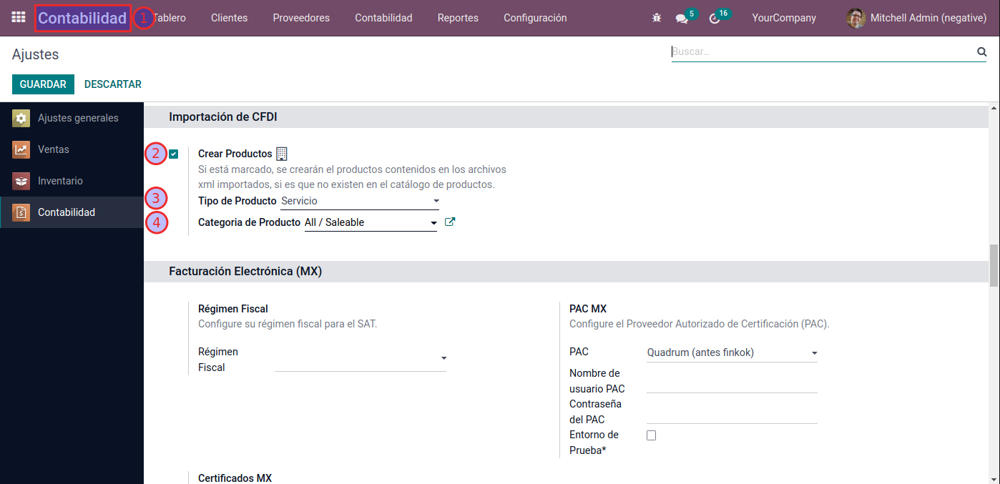
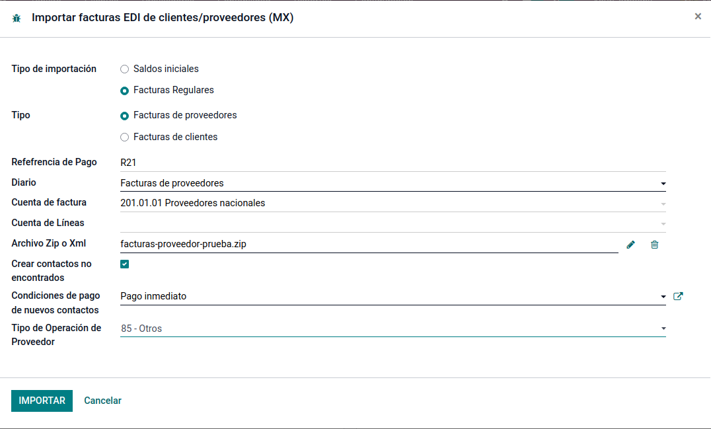
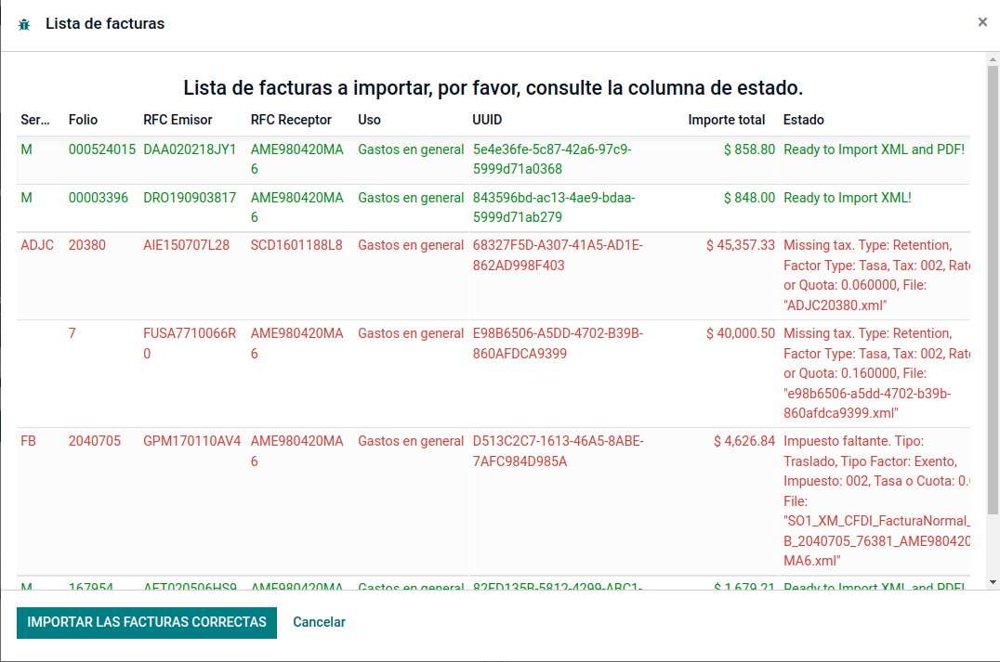
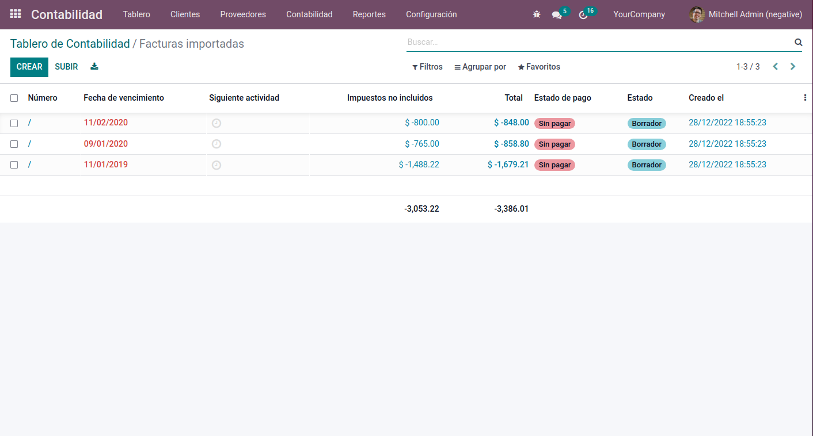

Descripción
Importación de facturas de clientes y de proveedores desde archivos XML y PDF (opcional).
Funciones clave disponibles
- Importación de Facturas regulares ó Saldos iniciales (solo incluye una línea de factura de resumen).
- Importación de Facturas de Proveedores y Facturas de Clientes
- Importación masiva desde un archivo comprimido ZIP o de un archivo individual XML (y opcionalmente su PDF).
- Creación automática de empresas no existentes en su catálogo.
Screenshots
1. Configurar en ajustes de Contabilidad si se crearán o no los productos de los xml importados si no se encuentran en el catálogo de productos (búsqueda por NoIdentificacion como Referencia Internarna y después por nombre).

2. Asistente para importación en ubicado en Contabilidad > Configuración > Importar Facturas desde XML (CFDI MX), es posible importar un solo XML y opcionalmente su PDF correspondiente o un archivo ZIP con varios XML (opcionalmente sus PDF que deberán tener el mismo nombre que el XML).

3. Lista de Facturas a importar, en verde las que están listas para su importación y en rojo las que contienen algún error.

4. Las facturas importadas quedan en estado borrador para su verificación y confirmación manual.

Si tiene alguna pregunta, no dude en ponerse en contacto con nosotros.